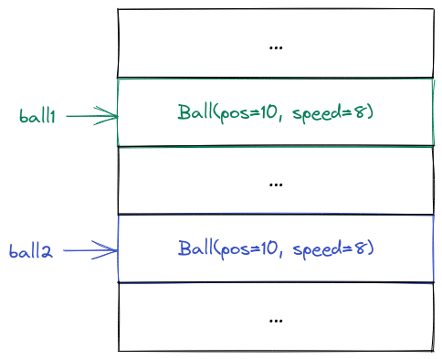
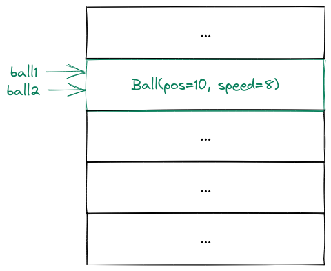

Chapter 4. Classes
Contents
Chapter 4. Classes#
Objects and classes#
An object is a data structure that contains state and behaviour.
Before we can create objects, we (usually) need to define a class which is essentially a template for creating objects.
Consider an example. We have a ball which has a position and a speed. The position and the speed are therefore the state of the ball. The ball can also move, i.e. update its position based on the speed. This is behaviour.
We can define a class Ball (which will be the template for creating Ball objects in the future) like this:
class Ball:
def __init__(self, pos, speed):
self.pos = pos
self.speed = speed
Here the state consists of the values pos and speed. Generally speaking, values that are associated with objects (and represent its state) are called attributes.
The __init__ function is a special function which initializes an object with some initial state.
For example if we want to create a ball at position 10 and with speed 8, we write:
my_ball = Ball(10, 8)
Let us inspect the attributes of the ball object:
f"pos = {my_ball.pos}, speed = {my_ball.speed}"
'pos = 10, speed = 8'
We can also get the class of the object using the type function:
type(my_ball)
__main__.Ball
We can also confirm that ball is an instance of the Ball class using the isinstance function. This will come in handy later:
isinstance(my_ball, Ball)
True
We could now change the state of the ball directly. For example this is how we could move the ball:
my_ball.pos += my_ball.speed
f"pos = {my_ball.pos}, speed = {my_ball.speed}"
'pos = 18, speed = 8'
But this isn’t really the way to go. What if we wanted to change the speed calculation later (for example taking friction into account)? Then we would need to adjust the calculation in every single place we use it, which is a lot of work and could introduce bugs if we forget the calculation adjustment somewhere.
If you paid attention in the previous chapter, this is the same problem we had when introducing functions. We stored the repetitive calculations in the function body and then simply called the function. Luckily, objects provide a similar mechanism.
We can define functions on objects - these functions are called methods and define the behaviour of the object. Note that the first parameter of all methods is the object itself. By convention this parameter is called self. For example here is how we could implement the Ball class with a move method:
class Ball:
def __init__(self, pos, speed):
self.pos = pos
self.speed = speed
def move(self, t):
self.pos += self.speed * t
Note that after creating the new class need to redefine the my_ball object, otherwise we will still be using the old class!
ball = Ball(10, 8)
ball.move(2)
f"pos = {ball.pos}, speed = {ball.speed}"
'pos = 26, speed = 8'
Note that if you see the error message AttributeError: 'Ball' object has no attribute 'move' this means that you are still using the old ball class and you need to redefine the class.
Note how the behaviour changed the object state. This is what objects are all about. They are initialized with some state and then we can use their behaviour to update the state.
The __str__ and __repr__ methods#
Quite often, we want to output the object (e.g. using the print function) to see its current state. However, if we just try to output the object, we get a string that is pretty useless:
ball
<__main__.Ball at 0x7f0f8404c640>
print(ball)
<__main__.Ball object at 0x7f0f8404c640>
Luckily, Python allows us to change this behaviour. There are two special methods called __str__ and __repr__.
The __str__ method produces a human-readable string for consumption by the end user. The __repr__ method produces an exact representation of the object. This is reflected by when these methods are called. For example if you just output an object in the REPL, you will see the output of __repr__. If you print and object, you will see the result of __str__.
These two methods often have the same implementation (since the end user usually wants to see the exact representation), but this doesn’t have to be the case. For example, we could argue, that the end user doesn’t care about the speed of the ball and only cares about its current position. Then the __str__ method would return a string that doesn’t contain dx and dy. However the __repr__ method should still return all attributes:
class Ball:
def __init__(self, x, y, dx, dy):
self.x = x
self.y = y
self.dx = dx
self.dy = dy
def move(self):
self.x += self.dx
self.y += self.dy
def __str__(self):
return f"Ball(x={self.x}, y={self.y})"
def __repr__(self):
return f"Ball(x={self.x}, y={self.y}, dx={self.dx}, dy={self.dy})"
ball = Ball(x=320, y=240, dx=-2, dy=2)
# Note how printing the ball results in the output of __str__
print(ball)
Ball(x=320, y=240)
# However just outputting the ball results in the output of __repr__
ball
Ball(x=320, y=240, dx=-2, dy=2)
We can also call __str__ and __repr__ manually by calling the str and repr functions:
str(ball)
'Ball(x=320, y=240)'
repr(ball)
'Ball(x=320, y=240, dx=-2, dy=2)'
Since __str__ and __repr__ are often the same, it’s enough to just define __repr__. If no __str__ is defined and you try to call it, Python will fallback to calling __repr__:
class Ball:
def __init__(self, x, y, dx, dy):
self.x = x
self.y = y
self.dx = dx
self.dy = dy
def move(self):
self.x += self.dx
self.y += self.dy
def __repr__(self):
return f"Ball(x={self.x}, y={self.y}, dx={self.dx}, dy={self.dy})"
ball
Ball(x=320, y=240, dx=-2, dy=2)
print(ball)
Ball(x=320, y=240)
You should write __repr__ for practically all your classes as a second nature. Being able to see the state of an object when outputting it is extremely valuable.
Object identity#
Let’s create two objects of class Ball whose attributes have the same values:
ball1 = Ball(320, 240, -2, 2)
ball2 = Ball(320, 240, -2, 2)
ball1
Ball(x=320, y=240, dx=-2, dy=2)
ball2
Ball(x=320, y=240, dx=-2, dy=2)
Note that all the attributes of these two objects have the same values, but they are totally different objects:

This means that if we change the values of ball1, then ball2 will be completely unaffected:
ball1.x += ball1.dx
# The value of ball1.x has changed
ball1
Ball(x=318, y=240, dx=-2, dy=2)
# However the value of ball2.x is exactly the same as before
ball2
Ball(x=320, y=240, dx=-2, dy=2)
But what happens if we write this?
ball1 = Ball(320, 240, -2, 2)
ball2 = ball1
Now we have a completely different situation. The symbolic names ball1 and ball2 are still two different names, but they refer to the exact same object:

This means that whenever we make a change using the name ball1, that change will be visible in the name ball2 as well:
ball1.x += ball1.dx
# Outputting ball1 obviously shows the new value of x
ball1
Ball(x=318, y=240, dx=-2, dy=2)
# However, outputting ball2 also outputs the new value of x!
ball2
Ball(x=318, y=240, dx=-2, dy=2)
We say that ball1 is ball2 (i.e. they are the same object). In fact the is operator can be used to check if two names represent the same object:
ball1 is ball2
True
We can also see that ball1 and ball2 are the same object using the id function. Generally speaking, this function hands us a number that is unique for each object (as long as that object exists). In the Python interpreter we downloaded in chapter 1 (which is the CPython interpreter) this is achieved by returning the memory address of the object.
In this case ball1 and ball2 point to the same object, so their memory address is the same:
id(ball1)
139704616143216
id(ball2)
139704616143216
id(ball1) == id(ball2)
True
However if we have two names that refer to different objects, then their memory address will not be the same and the is operator will return False:
ball1 = Ball(320, 240, -2, 2)
ball2 = Ball(320, 240, -2, 2)
id(ball1)
139704616141632
id(ball2)
139704616144656
id(ball1) == id(ball2)
False
ball1 is ball2
False
Object equality#
An interesting question is what happens if we use the equality operator == on objects. By default, the equality operator is equivalent to the is operator:
ball1 = Ball(320, 240, -2, 2)
ball2 = Ball(320, 240, -2, 2)
ball1 == ball2
False
ball1 = Ball(320, 240, -2, 2)
ball2 = ball1
ball1 == ball2
True
This is not particularly useful. After all, if two balls have the exact same position and the exact same speed, we would probably want them to be equal (even though the is operator returns False).
Luckily, Python gives us a way to achieve this by overriding (i.e. providing a custom implementation) for the equality operator. In order to do this, we need to write a custom __eq__ method which takes self and the other object we want to compare this object to:
class Ball:
def __init__(self, x, y, dx, dy):
self.x = x
self.y = y
self.dx = dx
self.dy = dy
# some methods
def __eq__(self, other):
return isinstance(other, Ball) and self.x == other.x and self.y == other.y and self.dx == other.dx and self.dy == other.dy
def __repr__(self):
return f"Ball(x={self.x}, y={self.y}, dx={self.dx}, dy={self.dy})"
The __eq__ method checks for two things. The first thing it checks for is if the other object is an instance of Ball. If it’s not, then the whole logical chain becomes False. This makes sense - after all, a Ball object should never be equal to a non-Ball object.
However, if the other object is a Ball as well, we check whether all attributes of self and other are equal. If they are, we return True, otherwise we return False.
Now the == operator works as we would like it to:
ball1 = Ball(320, 240, -2, 2)
ball2 = Ball(320, 240, -2, 2)
ball1 == ball2
True
Note that how and if you want to override == depends on your needs. For example it might actually be the case, that two balls shouldn’t compare equal, even if their attributes have the same values.
But generally speaking, if you override the equality operator, you should override it by checking that the two objects have the same class and their attributes have the same values.